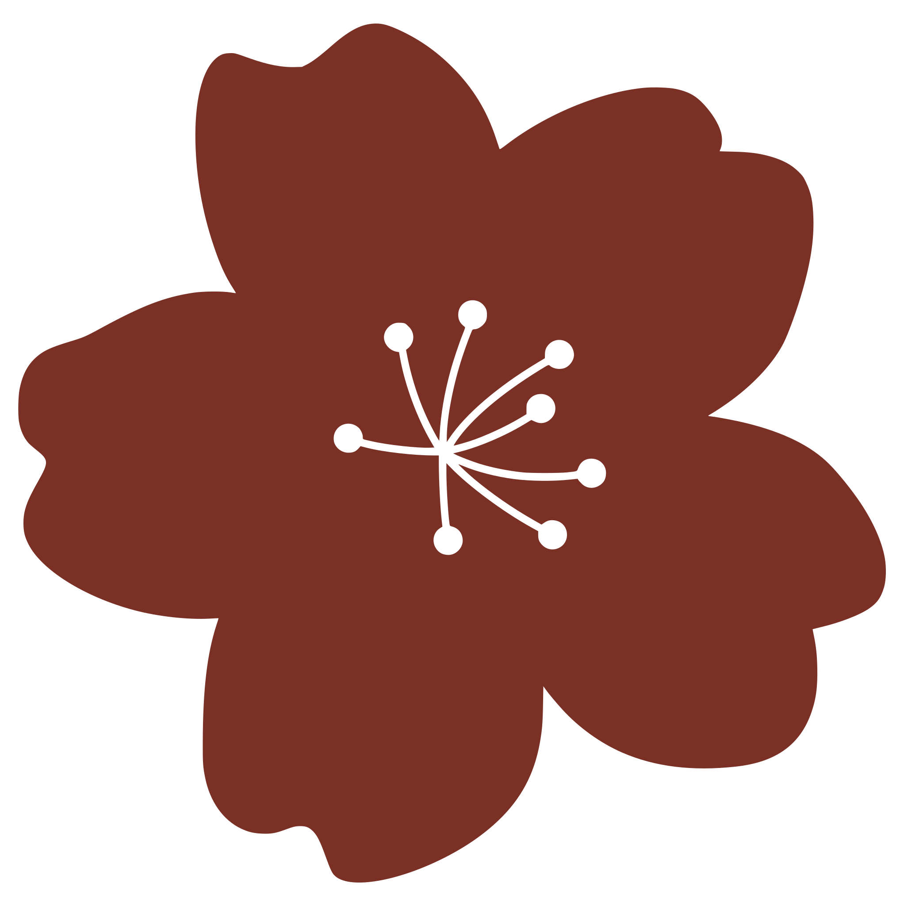
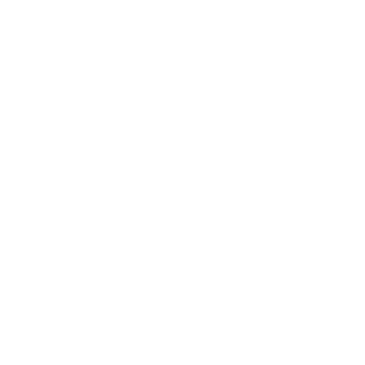
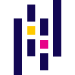
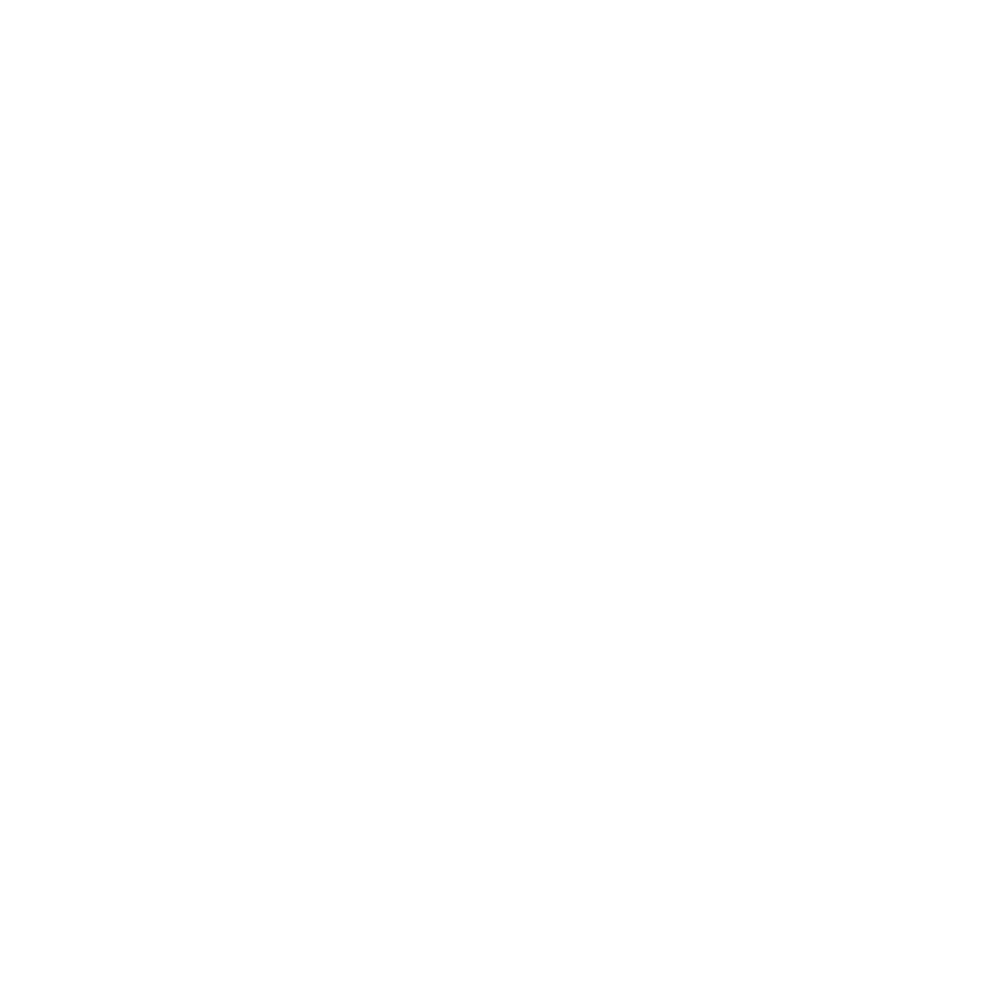

Julia Akemi Mullis
Estudante de Sistemas de Informação (ESPM)
01
Sobre Mim
Olá, sou a Akemi!
Atualmente atuo como Estagiária em Engenharia de TI em Open Finance no Itaú Unibanco , explorando diferentes frentes de tecnologia ao longo da minha formação profissional. Já tive a oportunidade de atuar em iniciativas de democratização de dados e desenvolvimento backend , aplicando boas práticas de engenharia em um ambiente de trabalho ágil.
Curso o 6º semestre de Sistemas de Informação na ESPM , com aprofundamento em cibersegurança e Inteligência Artificial , especialmente em técnicas modernas de Deep Learning.
Minha trajetória tem me mostrado que a qualidade de uma solução vai além de sua implementação técnica. Por isso, busco unir excelência técnica, compreensão do negócio e olhar para o cliente na construção de produtos que proporcionem experiências capazes de encantar.
02
Skills
Top 5 CliftonStrengths

1. Estudioso
Capacidade contínua de aprendizado e desenvolvimento de novas habilidades.
2. Foco
Direcionamento consistente de esforços para atividades relevantes e de maior impacto.
3. Significância
Comunicação clara de ideias e valorização da troca de conhecimento.
4. Estratégico
Identificação de padrões e definição de caminhos eficazes para resolução de problemas.
5. Disciplina
Organização estruturada e planejamento consistente para alcance de objetivos.
Hard Skills
-
Java
-
Python
-
AWS
-

SQL
-
 Docker
Docker
-
Spring Boot
-
PySpark
-
 Terraform
Terraform
-

Pandas
-
Git
03
Entregas
Democratização de dados em Data Mesh
Desenvolvimento de um produto de dados no Data Mesh para disponibilização das autorizações concedidas por clientes para compartilhamento de dados financeiros, com foco em democratização do acesso e eficiência financeira. A solução contemplou processamento e transformação dos dados, infraestrutura como código, controle de acesso e testes unitários e integrados.
- AWS
- PySpark
- Terraform
- AWS Glue
- AWS IAM
- Amazon S3
- SDD
Treinamento em Python para Áreas de Negócio
Desenvolvimento e condução de uma capacitação em Python e Pandas voltada a profissionais de negócio, com o objetivo de ampliar a compreensão de programação e facilitar a interpretação de códigos gerados por IA. O conteúdo foi estruturado em Jupyter Notebook, com explicações objetivas e exercícios práticos, e apresentado à toda comunidade.
- Python
- Pandas
- Jupyter Notebook
- Letramento em IA
Resiliência em Integrações Financeiras
Evolução de um fluxo de integração entre sistemas financeiros para aprimorar o tratamento de exceções e evitar a propagação incorreta de erros. A solução contemplou ajustes na lógica da API, cobertura com testes unitários e de integração e validação funcional da jornada pela aplicação.
- Java
- Spring Boot
- REST API
- SDD
Adoção do GitHub em Áreas de Negócio
Estruturação da adoção do GitHub em uma comunidade de negócio, com definição da organização dos repositórios, padrões de uso e boas práticas de versionamento. A iniciativa também incluiu treinamento em comandos básicos de terminal e Git, além da criação de documentação de apoio para facilitar a adoção das ferramentas no dia a dia.
- Git
- GitHub
- Controle de Versão
- Boas Práticas
- Treinamento Técnico
04
Trajetória
Formação Acadêmica
De fev. 2024 - Previsão para dez. 2027
Bacharelado em Sistemas de Informação
Escola Superior de Propaganda e Marketing – ESPM
Certificações
De mar. 2026 - Até mar. 2029
AWS Certified Cloud Practitioner
Fundamentos AWS Cloud
De mar. 2026 - Até o momento
SI - Ranking de Desempenho Semestral 25.2
1º Posição da Turma
Experiência Profissional
De ago. 2025 - Até o momento
Itaú Unibanco
Estagiária em Engenharia de TI em Open Finance
De ago. 2025 - Até abr. 2026
Itaú Unibanco
Estagiária em Automação e Analytics em Veículos
De nov. 2020 - Até jul. 2022
FURIA
Criadora de
Conteúdo sobre Games
Idiomas

Português
Nativo
Inglês
Avançado
05
Contato
Foi um prazer compartilhar minha história com você!
Meus
contatos estão à sua disposição.
akemi.mullis@gmail.com